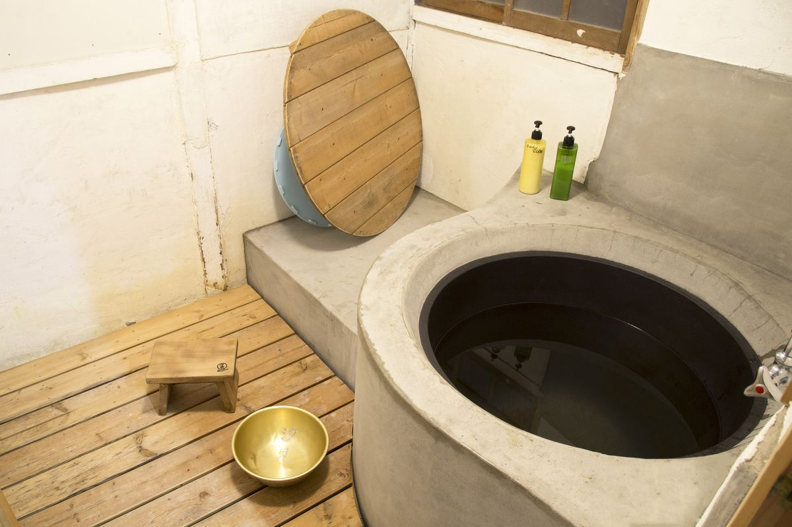
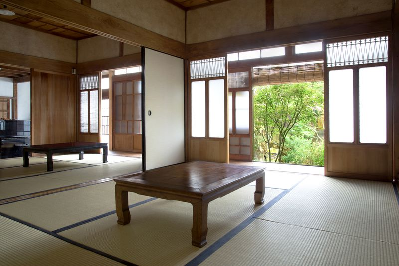

五右衛門風呂
薪で焚きます。井戸から汲んだ水を沸かすので、湯が軟らかい。焚きつけから湯加減まで、やりたい方にはお任せします。

瀬戸内海に浮かぶ佐島の、築百年を越えた古民家です。
襖を開けると庭があり、土間には井戸があり、風呂は薪で焚く五右衛門風呂。
何もしないための場所が、ここにあります。

薪で焚きます。井戸から汲んだ水を沸かすので、湯が軟らかい。焚きつけから湯加減まで、やりたい方にはお任せします。

手押しポンプ、またはバケツで汲みます。五右衛門風呂に使う水はここから。飲用には適しません。

クルアーンと礼拝マット、方角の印を用意しています。ムスリムの方が安心して泊まれる島の宿は、まだ多くありません。

足を下ろして座れる掘りごたつの間。ピアノもあります。弾いてください。
襖で仕切られた和室に布団を敷きます。相部屋で始めた宿ですが、いまは原則としてグループごとの個室です。

奥の間（6畳） 表の間（6畳）
表の間（6畳）
ほかのゲストやスタッフと一緒に、作る・食べる・片すをシェアします。料理が苦手でも大丈夫です。できることを手伝ってもらいます。島の人が差し入れを持って来て宴会になることもあれば、結局ひとりのこともあります。
夕飯 1,600円、朝飯 700円。火曜と日曜の夜はお休みです。

空室の確認とご予約はこちらから。お電話でも承ります。